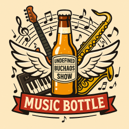

Регламент проведения конкурса Music Bottle
на летнем фестивале Undefined-2025
Дата проведения: 16 августа 2025 г.
Начало: 19:00
Место проведения: СПб, пос. Рощино, зал отеля Райвола
Официальный логотип состязания

Краткое описание
Требования к участникам
Участники должны уметь играть и импровизировать на своих инструментах. Уровень владения инструментом должен быть не ниже "медведь на балалайке".
Требования к инструментам
Инструменты могут быть совершенно разные, основное требование - соответствовать по громкости звучащим минусовкам и размеру зала: не быть слишком тихим, чтобы зрители слышали участника, не быть слишком громким, когда ничего другого не слышно. Допустимо использовать средства звукоусиления. Электроинструменты могут быть включены в общий микшерный пульт.
Конкурсные раунды
Конкурс состоит из 4 раундов:
1. Раунд "Всегда готов!". Самый простой раунд. У каждого музыканта или музыкального коллектива всегда есть дежурная мелодия/песня, которую он исполняет.
2. Раунд "Детская неожиданность". Самый сложный раунд, задача участника - не обделаться. Перед началом конкурса участники обмениваются музыкой из: oldscool приставочной игры, компьютерной игры, старого мультфильма, старой телепередачи и т. п. Первый участник импровизирует под трек, предоставленный вторым участником и наоборот.
3. Раунд "Глас вопиющего". Раунд раскрывает вокальные данные. Каждый участник дает своему противнику фразу из 3-5 слов. При исполнении своей композиции участник должен использовать данную фразу. Можно использовать один раз, можно рефреном, как угодно. Главное чтобы фраза была произнесена/вставлена в исполняемую композицию. Для забывчивых фраза может быть записана крупным шрифтом на листе. Мат и оскорбления запрещены.
4. Раунд примирения. Организаторы конкурса включает произвольно выбранную минусовку (бектрек), участники вместе неистово импровизируют. Возможно поочередное исполнение соло. Рекомендуемая длительность соло до перехода хода следующему музыканту - 15-25 сек.
Выставление оценок
Оценки выставляются жюри в составе не менее трех человек. В конце очередного раунда каждый член жюри отдает свой голос за первого или второго участника. В конце конкурса подсчитывается общее количество голосов за каждого участника. Голосование закрытое, результаты выясняются в конце всех раундов. В случае равного количества голосов, победитель определяется зрителями по громкости создаваемого ими шума.
Призы
В качестве приза разыгрывается бутылка с загадочной жидкостью (непосредственно, Music Bottle), которая во время конкурса находится на сцене и заряжается музыкальной энергетикой. Наличие других призов не запрещено.